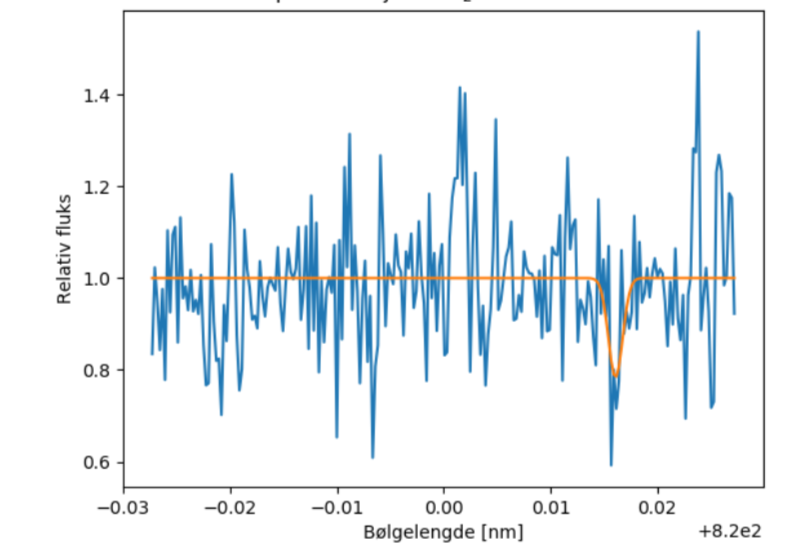

Forrige side🙂 🙁Observasjoner av spektrallinjer

Ser du at støyen har utslag som er like kraftige som spektrallinja som har blitt funnet. Det er viktig å merke seg at minste kvadraters metode og χ2 metoden gjør en best mulig tilpasning selv om det i dette tilfellet godt kan være at det overhodet ikke er noen spektrallinje her! Da kan det være at den har prøvd å finne en Gaussisk grop inne i støy-fluktuasjonene! Tenk gjennom hva du kan gjøre for å luke ut slike tilfeller (du vil aldri kunne luke disse ut med 100% sikkerhet!). Hvilken strategi vil du bruke for å avgjøre om dette er en linje eller ikke? Neste side